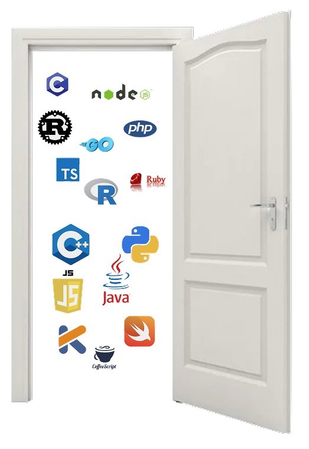

The Story
Why pseudocode
Why pseudocode
deserves to run.
There's an irony that stuck with me throughout every CS course I took: educators use pseudocode to teach the fundamentals of logic and computation, then immediately disqualify it from exams because it "isn't real code." That contradiction was the starting point for Pulsar. If pseudocode is expressive enough to explain an algorithm to a human, it should be expressive enough to explain it to a machine. Pulsar is that — a fully compiled, statically typed language built on the premise that readable code and rigorous code are not opposites. It isn't a stepping stone to other languages. It's an alternative entry point into the world of real programming, one that doesn't ask you to learn a new notation before you can start thinking in logic.
The name came from thinking about what makes a language trustworthy. A pulsar is a rotating neutron star that emits radio waves on a precise, calculable interval — you don't need to observe it constantly to know when the next pulse arrives. That predictability is what I wanted Pulsar the language to have. You shouldn't need to consult the spec every time you write a line. After a few programs the pattern becomes obvious, and you know what comes next. The logo came naturally from that — pulsars are stars, and a set of them felt like the right visual for something built around that kind of steady, readable rhythm.
